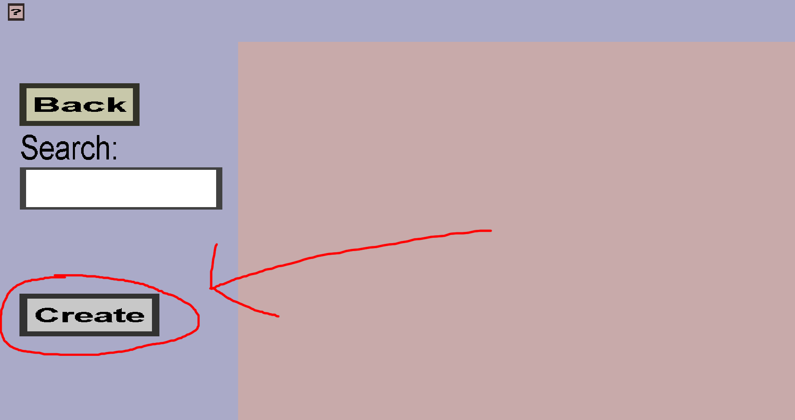
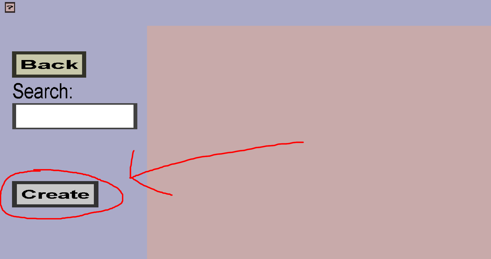

In this tutorial, I will demonstrate how to add (custom) wands and guns with this plug-in. They are described in this same tutorial because wands and guns are surprisingly similar: they both fire custom projectiles. The difference is that wands don't need bullets (they can only have a cooldown and charges). Guns can have have cooldowns, can require bullets directly from the inventory, or they need to be loaded before they can shoot. The exact system will be configured by you.
This is an advanced tutorial, so I will not show the basic setup needed for this plug-in. I recommend reading or watching one of the basic tutorials first (if you haven't done so already). This tutorial was created with Editor 9.6. If you are using an older version of the Editor, you might miss some of the features I show here. In that case, you should download a newer version of the Editor.
Before you can create wands and guns, you need to define the projectiles they will fire. These 3 images will guide you to get started (if you have used the Editor before, you should immediately recognize the menu in the left-most screenshot):
 

After clicking on each of the buttons in the red circles, you should see this:

There are many properties of the projectile that you can configure here, but only the Name is required. All custom projectiles must have a distinct name, but other than that, the name matters very little. Click the question mark on the top-left of the page for information about the other properties:
By default, custom projectiles are invisible. There are 2 ways to make them visible:
In-flight effects are 'effects' that will be 'played' periodically at the location of the custom projectile. To get started, follow these steps:

If you followed these steps, you should see this:

Every custom projectile has an (initially empty) list of projectile effect waves and each wave has a list of projectile effects and some timing properties. All projectile effects in the same wave will always be executed at the same time. Projectile effects from different ways can be executed independently. This page allows you to configure a single wave. The Ticks until first round is the number of ticks (1 tick = 0.05 seconds) between the time the custom projectile is launched and the first time the effects in the wave are executed. The Ticks between rounds is the delay in ticks between consecutive executions of the effects. For instance, if Ticks until first round is 20 and Ticks between rounds is 40, the effects in the wave will be executed at the following moments:

This page is mostly empty because you haven't added any effects yet. To add an effect, click on the green Add button. After doing that, you should see this:

These are all the kinds of projectile effects you can add. The following projectile effects can be used to make the projectile visible:

You can configure the color of the redstone dust particles (you can choose any color; so doesn't have to be red). You can use a site like RGB color wheel to see which color will be shown for given Red, Green, and Blue values. If your minimum and maximum red/green/blue are not the same, there will be some random variation in the color of the particles that will be spawned. You can also control how many particles (amount) will be spawned per effect execution and how far they can be away from the projectile (radius). I will stick with the default values this time. Click on Create when you are done with configuring. You should be taken back to this menu:

If you want, you can click on Add to add another effect. When you are happy with your effects, you should click on Back and then on Create. After doing that, you should see (something like) this:
If you want, you can click on Add effects to add another wave of effects. If not, you should click on Back. You should be taken back to this menu:
Custom projectiles can also have impact effects. Unlike in flight effects, the impact effects is just a single list of projectile effects. All impact effects will be executed once when the projectile hits something or someone. If the projectile despawns, the impact effects will not be executed. For this tutorial projectile, I will add a fireworks impact effect. To do so, click on Impact effects and then on Add and finally on Show fireworks. You should have been taken to this menu:

Firework projectile effects are the most complicated effects to configure (because minecraf fireworks are generally quite advanced). But, for a simple firework effect, there is only 1 thing you need to do: add a color:
The default color is pink, but you can change it to any color you want. You can again use RGB color wheel (or a similar site) to choose a color. You can configure more if you want, but it is not needed. Click the question mark on the top-left for information about the rest of the properties you can configure. When you are done with this effect, click Create. If you want to add more impact effects, click on Add. If not, click on Back. You should be taken back to this menu again:
Click on Create to finish the custom projectile. That should take you to this page:
I gave my projectile the name particle_projectile. If you choose another name, that name should be shown instead. The first projectile is finished, but it needs a wand or gun to launch it. I will first show how to create a wand that will fire the projectile. Guns will be demonstrated later.
To create a wand, follow these steps:


You should have been taken to this page:

Like most other items, you need to give the wand a Name and Texture. I will use the following texture:
You must also give the wand a Projectile. You should choose the projectile you just created. You can also configure the Max charges, Recharge time (this will appear when you increase Max charges), Amount per shot, and Cooldown. Click the question mark on the top-left for more information about them. I will just go with the default values. To finish the wand, click Create. Once you have done that, you are ready to test your first projectile and wand: Export your item set, replace your .cis file and resourcepack, and start your server!
To try your new wand, you can acquire it using /kci give wand_name and fire it by right-clicking. It should leave a redstone trail wherever it goes and show fireworks whenever it hits something:
As promised, I will also demonstrate how to use guns. From a technical perspective, guns are almost the same as wands. They can even use the exact same projectiles (but I will create a new projectile for the gun to show some more projectile properties).
The new projectile will use a projectile cover to display itself rather than (particle) projectile effects. A projectile cover uses a 'custom item' that can not be obtained. The plug-in will ensure that a dropped item with the texture of the 'custom item' will follow the custom projectile. Since dropped items always rotate slowly, projectile cover models should look the same from each side. Before creating a projectile cover, you should first create a texture for it. I will use the following texture:
To create the projectile cover, follow these steps:
After following these steps, you should have landed on this page:

On this page, you need to choose the shape of your projectile cover. At the time of writing this, the only possible shapes are sphere and custom. I might add more shapes in the future, but there are no concrete plans for that. When you choose sphere, the Editor will generate a sphere-shaped item model for your projectile cover. When you choose custom, you will have to supply the item model yourself. Creating custom shapes is quite complex, so I won't cover that in this tutorial. Instead, I will go for a sphere. You should land on this page:

You need to give the projectile cover a texture (for instance the black texture I use) and a unique name (I will give it the name bullet). You can also change the other properties if you want, but I will stick with the default values. You can change the Scale (the size) if you want the projectile to look bigger or smaller. You can click the question mark on the top-left for information about the rest of the properties. When you are satisfied, click the green Create button. Once you have done that, follow these steps to create the actual projectile:

You should land on this page (again):
You also need to give this projectile a name (for instance bullet). To use the projectile cover you just made, click on the None button on the right of Projectile cover:. Then click on the bullet button (or whatever you named your projectile cover). As finishing touch, I will also tell how to play a sound upon shooting this bullet:
Now that you have the bullet projectile, it is time to create guns that can shoot it. I will use the following gun textures (not my best artwork, but this is just a tutorial):
I will show how to create 2 guns: 1 direct gun and 1 indirect gun. I will explain the difference later. First, I will show how to create the direct gun:
You should land on this page:

Like most other items, you also need to give guns a texture and a unique name. I will call it direct_gun and use the texture with the brown handle. Just like wands, you also need to select a projectile (on the right). Go ahead and choose the bullet projectile you just created. Finally, it is time to configure the Ammo system:

By default, guns will use direct ammo, so there is no need to click on the Direct or Indirect button. For direct guns, you only need to configure the Ammo item and cooldown. The default cooldown is 10 ticks (half a second). You are free to change this, but I will leave it like this. So, the last thing to configure is the Ammo item. Normally, you would create a separate ammo custom item for this, but I am lazy and will use flint instead. Once you have configured the ammo, you should click on Apply and then on Create.
Now its time to create the second gun. This gun will be similar to the first one, but it will get indirect ammo (and a slightly different name and texture). Start by following the same steps as you did for the first (direct) gun. But, when you configure the ammo system, click on the Indirect button:
After clicking Indirect, you should see this:
Indirect guns need to be loaded before they can shoot. Loading an indirect gun takes time and/or consumes items from the players inventory. The Recharge item is the item that will be consumed (and required) to load the gun. If you don't choose a recharge item, loading the gun won't cost any items; it only takes time. (This is how ammo works in the game Overwatch). In this tutorial, I will use 30 flint as recharge item. To do so, follow these steps:
The Reload time is the time (in ticks) it takes to reload the gun. I will just leave it 20 ticks (1 second). The Stored ammo is the number of projectile the player can shoot before needing to reload again. I will just leave it 30 (I also used 30 flint as recharge item because it feels natural). Finally, you can configure the Start reload sound and Finish reload sound. These sounds will be played when the player starts reloading the gun and finishes reloading the gun. I will use Block dispenser fail and Entity skeleton hurt. Finally, you can configure the Cooldown. This is the minimum time (in ticks) that the player needs to wait after shooting before he can shoot again. If this time is very small, players will fire more than 1 bullet when right-clicking once because the timing system of this plug-in is not very accurate. I will set the cooldown to 4 ticks. When you are done, click on Apply and then Create.
Now that you have added the guns, it is time to export and test them! You can use /kci give ... to give yourself the guns. The direct gun should require and consume 1 flint each time you shoot with it. (Make sure you have flint in your inventory.)
The indirect gun should have 30 ammo initially and reduce its ammo when you shoot with it. It should also shoot more bullets per second than the direct gun because it has a cooldown of 4 ticks rather than 10. This gun won't require any flint until it runs out of ammo. When it does run out of ammo and you try to shoot, you should hear its reload sounds and see 30 flint being consumed from your inventory (at least, if you have at least 30 flint).
The ammo system of the indirect gun is not very convenient for the players because they can only see how much ammo they have left if they open their inventory to check the lore. This will be improved if you install the ActionBarAPI plug-in. See the section about ActionBarAPI for installation instructions. After installing it and restarting your server, you should see this nice ammo bar:
By default, these helper texts will be in English. If you don't like that, you can change them in the file plugins/CustomItems/lang.yml.